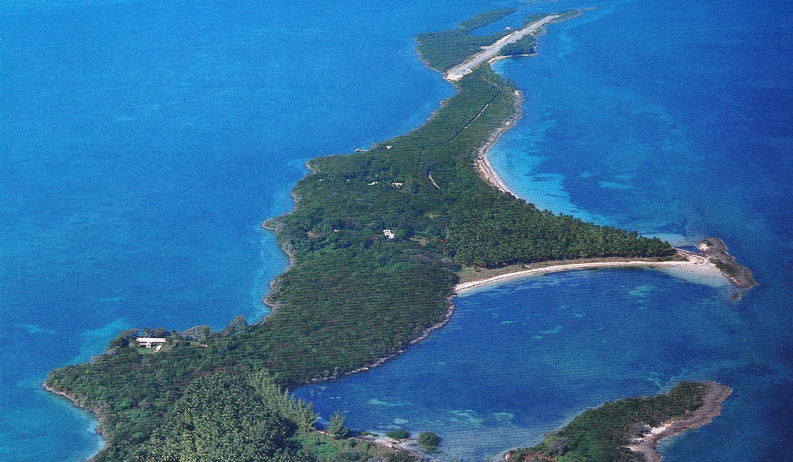

Spanish Cay
Spanish Cay is a 2½-mile long island 190 miles northeast of Miami purchased by Clint Murchison Jr. in 1952. The island sported six beaches, a storm-safe harbor, an airplane runway, a coconut grove, and a 14,000-square-foot, mid-century modern home designed by Murchison Jr.
Click to view image


This is a cutline
Source: Google Earth; © 2016 DigitalGlobe